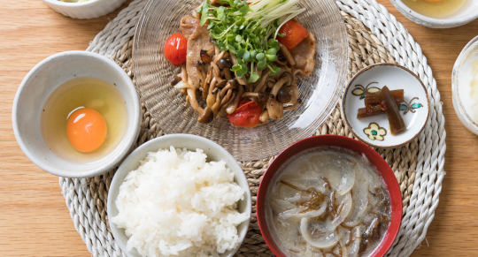

Breakfast -¥ 2,000/人
ブレックファーストでは和食と洋食をお選びいただけます。

地元で採れた新鮮な野菜や旬の魚を使った味噌汁や焼き魚、出汁の効いた煮物など、日本の伝統を感じさせる朝食をご用意しました。自然の恵みをたっぷりと取り入れた食事で、一日の始まりを穏やかにお楽しみいただけます。
- ・焼き魚（サバの塩焼き）
- ・季節の煮物（かぼちゃの煮付け）
- ・手作りのぬか漬け
- ・香り豊かな出汁巻き卵
- ・その他副菜
焼きたてのパンやこだわりの卵料理、フレッシュなサラダを取り揃え、地元の食材を生かした豊かな朝食をご提供します。フルーツやヨーグルトも添え、大自然の中で体が喜ぶ朝のひとときをお過ごしいただけます。
- ・クロワッサンと全粒粉パン
- ・オムレツ（野菜入り）
- ・グリーンサラダ（地元の新鮮野菜使用）
- ・ヨーグルトと季節のフルーツ
- ・その他オレンジジュース等